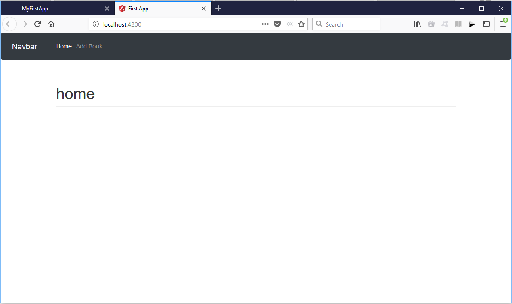

Angular Route Module
It's good programming principle to create a module to manage our routes. create a file app-routing.module.ts in the client/src/app directory.
app-routing.module.ts
Since this a module, add it to the app.module.ts
Adding Bootstrap
There are couple of options available for adding bootstrap. The fatest method is using CDN. Add the CDN to the client/src/index.html page.
Notice that we add the css at the top and the javascript at the bottom of the page.
Components
Make a new folder called components in the client/src/app directory. change directory to this folder and run the commands below to create our first component
Also generate another component to hold the navbar
We'll build the navbar using a navbar from bootstrap. Add to navbar.component.html
To use the component, add the selector in the app.component.html
You should now see the navbar displayed. Now we have the navbar and the home component, let us modify the route module to use the home controller.
app-routing.module.ts
We also need to add the router outlet to our app component to use the routers we defined.
app.component.ts
Modify the home.component.html to see if the changes is effected.
You should now see the home page
